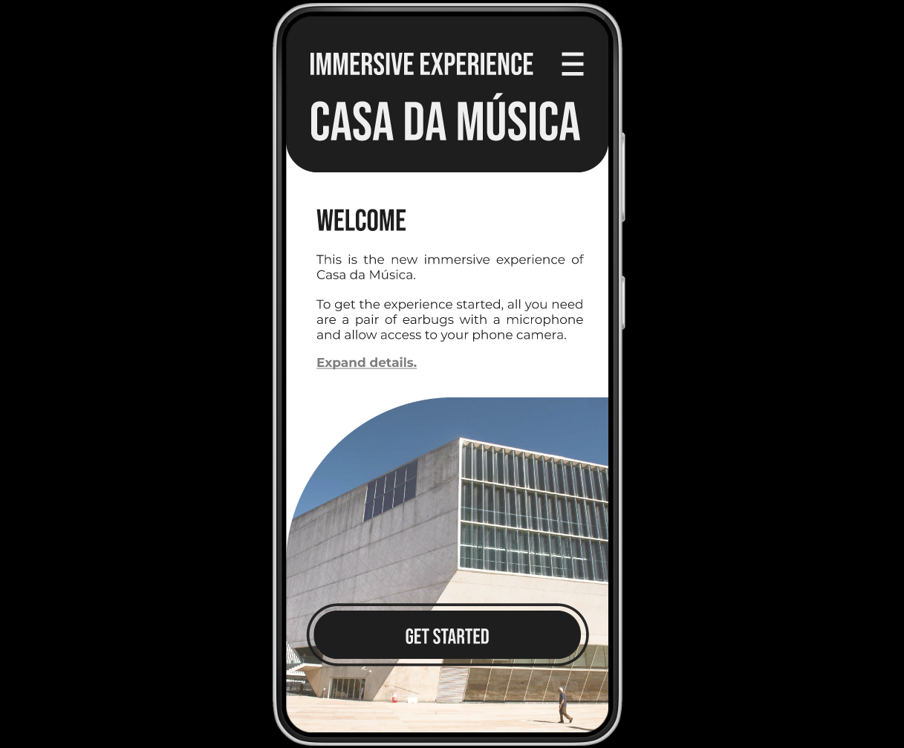

Immersive sound experience. Casa da Música, Porto.
March of 2023
A non-lineal narriative based on a fixed location. This sound immersive experience project helps to recreate the story of an emblematic building in the city of Porto through the perspective of the people that frequent the space.
There are 3 different paths to explore depending on which door you choose to enter the building. One location may have more than one story if the that location is usually frequented by different kind of people (i.e. Musicians, skaters, tourists, workers, students...).
You will learn about the history of the building, about how the space brings together new friendships and relations and how people perceive and understand it.
There are 3 different paths to explore depending on which door you choose to enter the building. One location may have more than one story if the that location is usually frequented by different kind of people (i.e. Musicians, skaters, tourists, workers, students...).
You will learn about the history of the building, about how the space brings together new friendships and relations and how people perceive and understand it.


Technical rider
Software: Figma, Arcweave, Protopie, Davinci Resolve, Affinity
Reources: FMA, FreeSound Library, Apoore World's sound
Idea: Non lineal narrative based on a fixed location.
Location: University of Porto/Casa da Música. Porto, Portugal
Links
Figma prototype
Pitch presentation